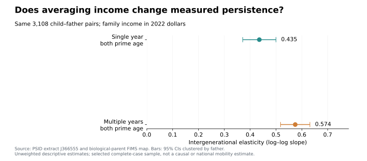
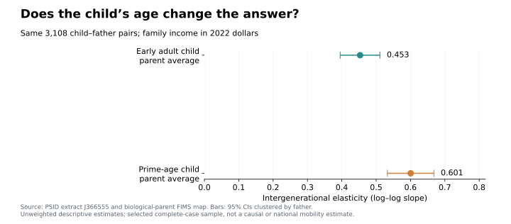

Does One Year Tell the Whole Income Story?
A Python and SQL tutorial for matching PSID parents and children.
Would a graduate student’s income today tell us where they will stand at forty? Probably not. The same problem matters when comparing children with their parents: a convenient single-year observation can give a misleading picture of long-run economic mobility. This tutorial uses Python’s SQLite interface to build a defensible parent–child match, then asks how averaging income and changing the child’s measurement age affect the answer.
1. Build identities before joining incomes
The Panel Study of Income Dynamics (PSID) follows families and their descendants. I use a 261-variable, 85,536-person extract covering available interview waves from 1968 through 2023, plus a biological-parent FIMS mapping. The income measure is family money income, not individual earnings.
Download your own authorized extract and keep the ASCII file, Stata
reading statements, and codebook together. The repository’s Python
script reads fixed-width positions from those statements; opening the
file as a comma-separated CSV would misalign its fields. After
installing the packages listed in the README, run this command from
blog/posts/post6, using your local paths:
python code/analyze.py --data /path/J366555.txt \
--statements /path/J366555.do --fims /path/fim16218_gid_BO_2_UBL.txtA permanent person ID combines the 1968 family identifier and person number. FIMS supplies explicit child and father IDs; sharing an original family identifier alone does not establish parenthood. A separate family interview ID changes across waves. Therefore, connect a person’s membership record to family income using both wave and family ID:
SELECT m.pid, m.wave, m.age, f.income_real
FROM membership AS m
JOIN families AS f
ON f.wave = m.wave AND f.family_id = m.family_id;SELECT chooses columns; JOIN combines rows
whose keys agree. Validate unique person–wave and family–wave keys
first, then assert that this join preserves the membership row count.
Otherwise, duplicate keys can silently multiply observations.
The full importer creates these tables in Python. SQL then runs through the standard-library connection:
import sqlite3
from pathlib import Path
db = sqlite3.connect(":memory:")
# Populate people, membership, families, and links with the importer first.
db.executescript(Path("sql/match.sql").read_text())
matched = db.execute("SELECT * FROM matched ORDER BY child_pid").fetchall()2. Summarize years before matching generations
Income generally refers to the calendar year before the interview. I convert it to 2022 dollars with annual CPI values and retain current household heads or spouses/partners, avoiding assigning a co-resident adult child their parents’ income. Codebook-specific upper codes and incomes at or below $1 are excluded, including historical bottom-coded losses.
For each generation, the prime-age window is interview ages 35–44. This corresponds approximately to income ages 34–43. Require at least three valid observations, average income levels, and only then take logarithms:
SELECT pid, AVG(income_real) AS avg_income, COUNT(*) AS n_years
FROM panel
WHERE age BETWEEN 35 AND 44
GROUP BY pid
HAVING COUNT(*) >= 3;WHERE filters annual records; GROUP BY
makes one group per person. AVG and COUNT
aggregate those records, while HAVING filters the resulting
groups. Join the child and father summaries to FIMS after
aggregation, preventing every child-year from matching every
father-year. The complete SQL file also selects single observations
closest to ages 40 and 27, breaking ties with the earlier wave.
Of 29,215 linked child–father pairs present in the extract, 3,108 meet all income and age-window requirements. Requiring an early-adult observation as well as both prime-age histories keeps every comparison on this same selected sample.
3. Estimate and compare persistence
In Python, estimate an intercept and slope in:
The slope is the intergenerational elasticity (IGE): approximately how much higher child income is associated with a 1% difference in father income. Larger values indicate stronger income persistence, not a causal effect of parental money. Given the SQL connection above, Python obtains the slope as follows:
import numpy as np
rows = db.execute("SELECT parent_avg, child_avg FROM matched").fetchall()
y_parent, y_child = np.asarray(rows).T
X = np.column_stack([np.ones(len(rows)), np.log(y_parent)])
intercept, ige = np.linalg.lstsq(X, np.log(y_child), rcond=None)[0]The full script repeats this regression for each income definition and exports the estimates and confidence intervals.

All comparisons use the same 3,108 child–father
pairs, representing 1,679 distinct fathers. Single-year
prime-age income gives an IGE of 0.435; averaging
available prime-age observations gives 0.574. Children
contribute 5.25 years on average and fathers 8.12. The stronger
association is consistent with averaging reducing temporary-income
noise, particularly in the parental measure. At 0.574, a 10% difference
in father income is associated with approximately a 5.6% difference in
child income (1.10**0.574 - 1). These averages remain
imperfect proxies for lifetime income.
4. Check age separately

Next, separate age from averaging: keep the father’s prime-age average, but use a single child observation in both models. This is why the prime-age benchmark is now 0.601 rather than the two-generation-average estimate of 0.574. Holding father income fixed at its prime-age average, measuring child income near interview age 27 produces 0.453, compared with 0.601 near age 40. Thus, the income–lifetime-income relationship can depend on age: this is the concern behind life-cycle bias. Averaging alone does not solve it. This comparison demonstrates age sensitivity; changing calendar periods and household composition mean it cannot isolate the exact size of that bias.
These are unweighted, selected-sample estimates, not national mobility statistics. Requiring long follow-up excludes many people. Figures show 95% confidence intervals clustered by father because siblings share a parent; they do not establish causation.
- Match generations with documented relationships and stable IDs.
- Aggregate within people before joining generations.
- Check both income averaging and age at measurement before interpreting persistence.
Sources and replication
Panel Study of Income Dynamics, public use dataset. Produced and distributed by the Survey Research Center, Institute for Social Research, University of Michigan, Ann Arbor, MI (2026). Sources: PSID Data Center, FIMS, and PSID identifier guidance. Annual CPI values are from the Minneapolis Fed historical table, rounded to one decimal. See research on life-cycle measurement and Python’s sqlite3 documentation.
Code, variable mapping, replication instructions, and validation and the aggregate estimates table accompany the article. Raw records and individual matches are not distributed here; replication requires your own authorized PSID download under its Conditions of Use.